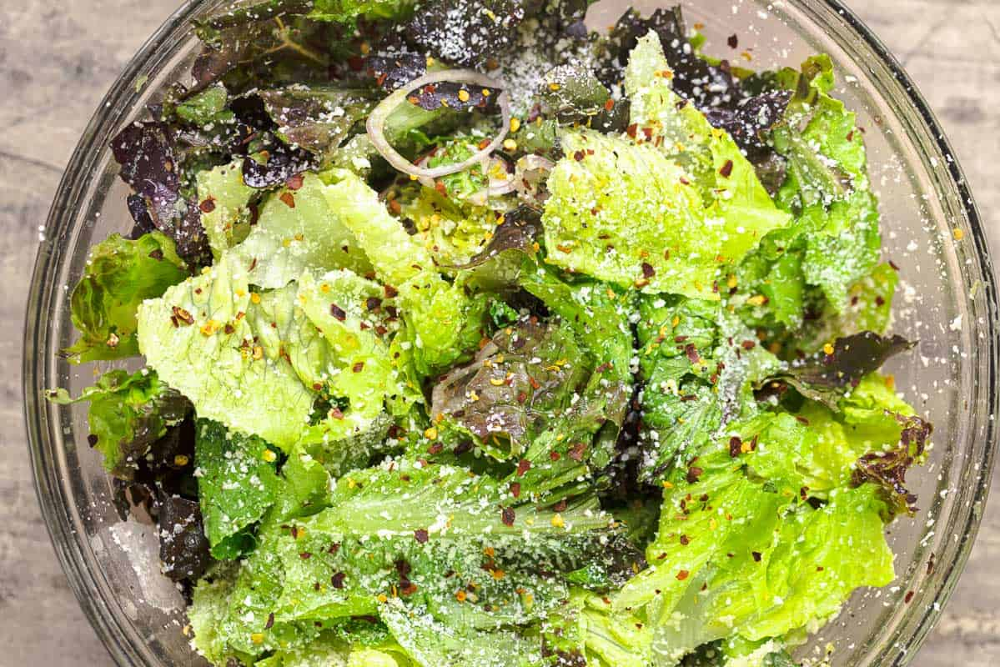

Lettuce Salad

Description
For something like this lettuce and Parmesan salad, try to use a crispy
lettuce such as Romaine or red leaf lettuce (I used both to give me a little
variety and good texture). You can also throw in some frisée lettuce, Belgian
endive, or arugula, but be sure to start with Romaine lettuce and fill in with
the rest.
When buying your lettuce, look for crisp, bright-colored leaves, and avoid
anything that looks dry or wilted. Some spotting or small holes are common,
particularly if you’re buying organic lettuce that’s been grown without the
use of sprays.
Ingredients
This lettuce salad is my light and easy twist on a classic Caesar. You’ll
need:
-
Lettuce: I used hearts of romaine lettuce and red leaf lettuce. As I
mentioned above, any lettuce would work, but I like the varied textures and
colors of the romaine and red leaf lettuce.
-
Shallots, thinly sliced: For mild sharpness, sweetness, and great crunch.
For bolder flavor, use thinly sliced red onions.
-
Lemon zest: You’ll need the zest of 2 lemons. Save the juice to season the
salad.
-
Dressing: Lemon juice and extra virgin olive oil form one of the most basic
salad dressings, with bright flavor from the lemon juice and a hint of
pepperiness from the olive oil. I used our Spanish Hojiblanca EVOO because
it is pungent, fruity, and ever so subtly bitter.
-
Parmesan cheese: Some freshly grated Parmesan cheese adds some sharpness and
nuttiness to the romaine lettuce salad. If you like tangier, sharper flavor,
crumbled feta cheese would work as well.
-
Crushed red pepper flakes or Aleppo-style pepper (optional): Red pepper
flakes add subtle heat. For an even milder option, try Aleppo-style pepper,
which is more sweet than spicy. Or, simply omit if you don’t like heat!
Instructions
-
Prepare the lettuce. Chop 1 to 2 hearts of romaine and 1 bundle of red leaf
lettuce, and rinse and drain it very well. I recommend using a salad spinner
to get rid of excess moisture. You can also give the lettuce a good shake.
Pat dry thoroughly. If you have time, wrap the lettuce in paper towels and
refrigerate for a little bit. This helps it crisp up.
-
Make the lettuce salad. Grab a large salad bowl and add the lettuce, 2
thinly sliced shallots, and the zest of 2 lemons. Keep the lemons! You need
them for the next step.
-
Add the salad dressing. Season the salad with kosher salt, black pepper, the
juice of 2 lemons, and ¼ cup extra virgin olive oil. Toss to combine.
-
Add finishing touches and serve. Sprinkle 1 cup finely grated Parmesan
cheese and some red pepper flakes (optional) and toss again. Serve and
enjoy!
<